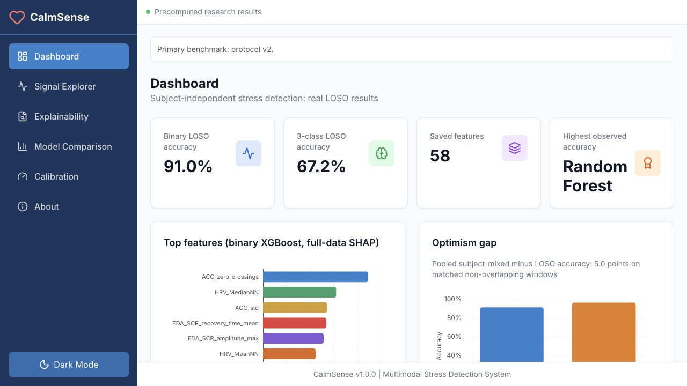
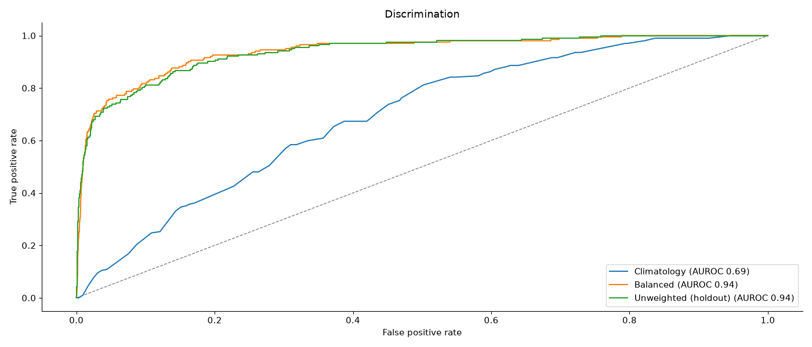
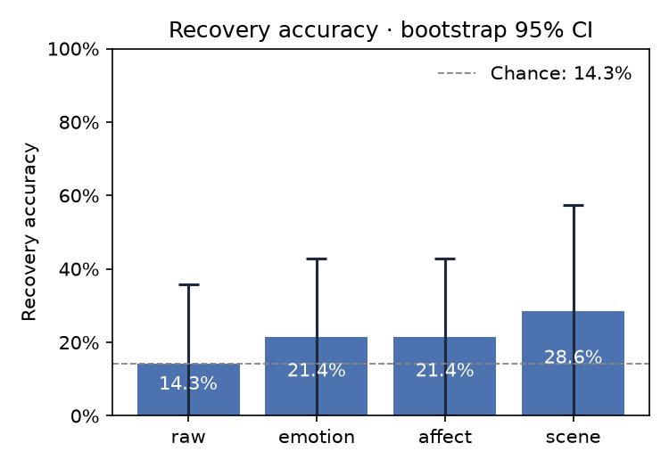
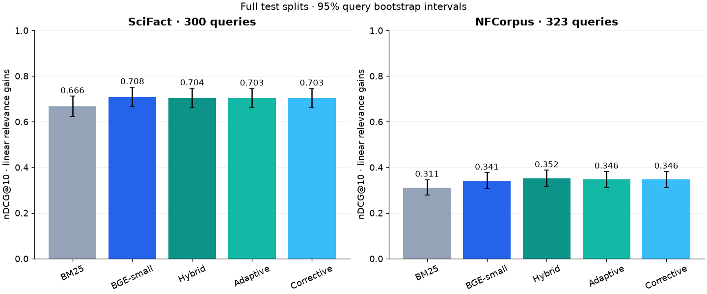
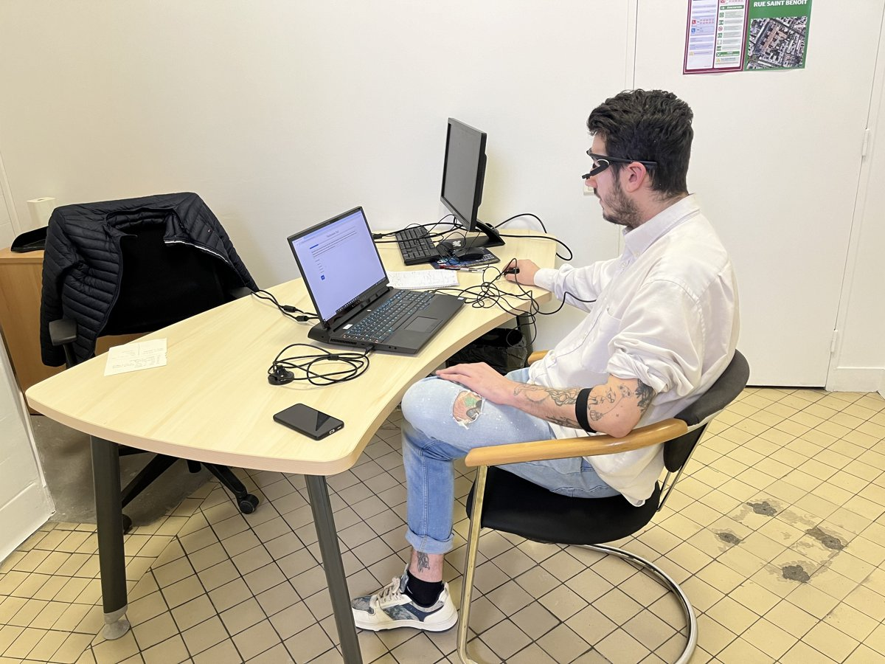
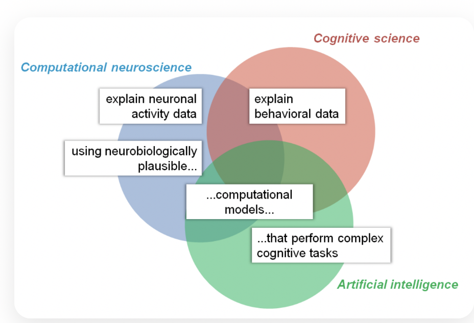
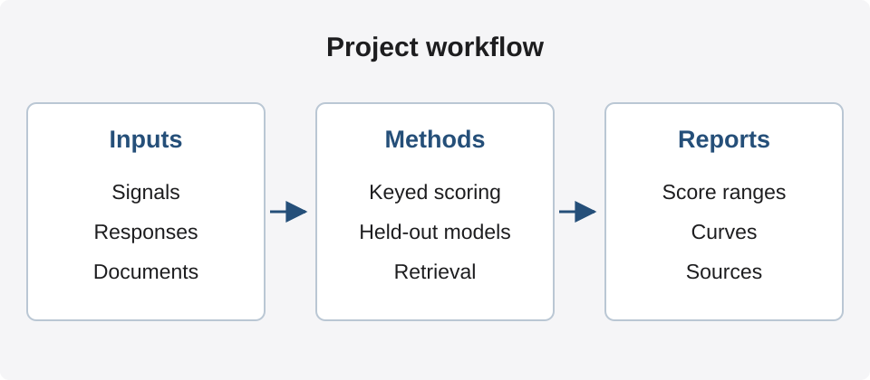

Urme Bose
Machine learning · Behaviour · Biosignals · Digital health
Machine learning engineer and behavioural researcher.
CNRS and Erasmus Mundus training in multimodal sensing, longitudinal data and predictive modelling.
Selected Projects




Academic Services
- Conference Reviewer: CYPSY 2023, ICASSP 2026
- Journal Reviewer: IEEE
Education
Université Paris Cité
M.Sc. in Cyberspace, Behavior and E-Therapy
- Fully funded by the European Commission
- Degree: Computer Science, Psychology
- Classification: Bien | 120 ECTS
- Supervised by Dr. Lise Haddouk and Dr. Pierre-Paul Vidal
- Thesis: Longitudinal Analysis of Neurophysiological Correlates of Anxiety During Psychometric Assessment
- Lab: Centre Borelli, CNRS
University of Barcelona
M.Sc. in Cyberspace, Behavior and E-Therapy · Erasmus Mundus Joint Master
- Fully funded by the European Commission
- Engaged with behavioural intervention design and digital behaviour research across European contexts
Bangladesh University of Professionals
B.Sc. in Information & Communication Engineering
- CGPA: 3.58/4.00 (80.7/100), First Class
- Final 80 credits: 3.75/4.00 (87.0/100)
- Major: Computer Science
- Supervised by Dr. Md Junaebur Rashid
- Thesis: Study of the Properties of Different Shaped Microstrip Patch Antennas (MPA) Operating at 2.45 GHz
- Lab: FAB LAB DU
Skills
Programming & Tools
Python · R · C++ · JavaScript · MATLAB · LaTeX
Libraries & Frameworks
NumPy · Pandas · Scikit-Learn · Keras · TensorFlow · PyTorch · Hugging Face · SciPy · MySQL
Languages
English (C1, Advanced) · German (A2, Beginner) · Bengali (Native)
Awards & Honors
Erasmus Mundus Joint Masters Scholarship, European Commission, 2022
Semi-Finalist, Crossroads Emerging Leaders Program, Harvard University, 2021
Outstanding Academic Performance, Faculty of Science and Technology, BUP 2018
About Me
Research Interests

My Approach

Expertise related to UN Sustainable Development Goals
SDG 3
Good Health and Well-being
SDG 9
Industry, Innovation and Infrastructure
SDG 13
Climate Action
Hobbies
Chess
Favorites:
- The Sicilian Defense
- The Queen’s Gambit
- The Opera Game Mate
Reading
Philosophy, science fiction, literary fiction.
Favorites:
- Meditations (Aurelius)
- Nexus (Harari)
- The Singularity Is Nearer (Kurzweil)
Traveling
Favorites:
- Paris
- Barcelona
- Prague
Hiking
Favorites:
- Lac Blanc, France
- Montserrat, Spain
- Sintra, Portugal